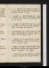
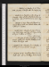
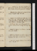
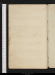
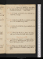
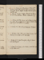
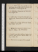
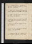
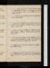

- About
- Diary
- People
- Events
- Reading
- Writing
- Meals
- Meetings
- Search

Jan. 1. 1798. M.Burke's 3rd Letter, p. 34: Rival Queens, acts 1, 2, 3. Fawcet calls: M sups. meet Barnes.
2. Tu.O. M., p. 2, 3. Burke's Memorials, p. 40. Miss Cooper, mrs Cole, F Ht & F call: dine at Johnson's, w. Fuseli & Wilkinson. Carlisle & Combe.
3. W.Memorials, p. 122. Combe & White call: call on Leslie n, Kearsley n, & Nicholson n. Theatre, 3/10 Castle Spectree.
4. Th.Natural Magic, p. 7/2. Roscoe, p. 52. Combe calls: Carlisle dines.
5. F.N Magic, p. 10. Memorials, p. 150. Dine at Reveley's, adv. Hammond: tea C Smith's.
6. Sa.Johnson breakfasts: Combe calls: call on Lawrencen: Fawcet & M dine: theatre, 1/2 Clandestine Marriagee.
Jan. 7. Su.Magic, p. 13. Cha Smith calls: dine at Ht's, w. Coles, Fenwicks, Braddocks, Kingslake, &M R, & Tobin: Combe.
8. M.R Fell & Carlisle call: dine at Fenwks, w. Braddocks; adv. M R &Dyson & Reveleys.
9. Tu.M'Cormick, pp. 383. Call on Heath & Nicholsonn: Dyson sups: Combe calls.
10. W.Memorials, p. 160. Carlisle calls: dine at Ht's, w. S Cole: tea C Smith's, w. Ht & Newhouse.
11. Th.Memorials, p. 199, fin. Dine at Fenwick's, w. Fawcets, Braddocks & M R; adv. Tucker: theatre, Secrets worth Knowing; adv. Me.
12. F.Rival Queens, acts 4 & 5: Burke's Appeal, p. 52. M & M R dine.
13. Sa.Appeal, p. 70: Reynolds, p. 14. Dine at B Hollis's, w. Nichols, Batleys, Geddes, Disney, White, Jervis & Towers jun.
Jan. 14. Su.Reynolds, p. 32. Carlisle calls; talk of le beau ideal: M & miss G dines; adv. Dyson & Dibbin.
15. M.Reynolds, p. 50. Call on Dr Moore: sit to Chandler; dine; adv. Philips.
16. Tu.Paley's Evidences, p. 98. Theatre; 1/2 Country Girl, & Bluebeard; adv. Newtone. Lucas to schoole.
17. W.Dyson calls, talk of property: Fenwicks sup.
18. Th.Paley, p. 188. Call on Chandler & Northcote: theatre, Confederacye.
19. F.Price on the Picturesque, p. 122: Paley, p. 217: Massacre of Paris, acts 1, 2, 3. Fawcet calls: dine at Reveley's; adv. English.
20. Sa.Price, p. 244. Tea Cha Smith's.
Jan. 21. Su.Reynolds, p. 94: Price, p. 288: Bourgeoises à la Mode. Dine at Hts, w. De Camp, Parrys & Coles: M R calls n: call on M Robinsonna: Leslie calls.
22. M.Ovid, Lib. VI, 229: Reynolds, p. 145. Ht calls: Dibbin at tea.
23. Tu.Ovid, 420. R Fell, M R & Carlisle call: tea Johnson's, w. Fuseli, Seward, Simmons, Edwards, Newnum & Opie: Dyson sups.
24. W.Reynolds, p. 162: Benj. Benton, p. 36. Call on Chandler: Montagu & M dine.
25. Th.Adept, p. 13, 14, 15. Benton, p. 61. Theatre; Knave or Not; adv. C Smith, Dyson, M, Opie, Willis, Parrys, Webb & Coventrye.
26. F.Adept, p. 18. Benton, p. 92; Vol. II, p. 17. Theatre; 1/5 Knave or Note.
27. Sa.Adept, p. 22. Benton, p. 60. Theatre; Round Towere.
Jan. 28. Su.Adept, p. 23. Benton, p. 76. Walk w. Dyson: dine at H Tooke's, w. Arabins, Sturt, Burdet, Fergusson, Frend, Cline, Kid, Cheap, Parry, Warner, Bosville, H Scott & P Courtenay.
29. M.Wrongs of W., Vol. I. Mrs Cole & F Ht call. Publication.
30. Tu.Adept, p. 25/2. Call on Chandler: Fenwks & M dine; adv. R Fell. Benton, p. 90, fin.
31. W.Adept, p. 27. Price, p. 389, fin. Montagu breakfasts: dine at Reveley's; adv. Dalby: Dyson calls.
Feb. 1. Th.Adept, p. 29/2. Call on Johnson & Ritson: meet Baker: tea C Smith.
2. F.Wrongs of W., Vol. II: Castle Spectre. M dines: theatre; Conscious Lovers; adv. King, &ce.
3. Sa.Adept, p. 30. Meet Barbaulds & Dealtry: theatre, 3/10 Jewe: E P Cooper calls.
Feb. 4. Su.Adept, p. 31. Burke's 3rd Letter, p. 165, fin. Dine at Ht's, w. Opie & E P Cooper; adv. De Camp, Northcote & Tobin.
5. M.Adept, p. 34. M R & Ht call: dine at Kg's, w. Danvers, miss Sturt, Prince Joseph of Monaco & Thomas.
6. Tu.Adept, p. 35/2. Reynolds, p. 218. Dangerfield calls: dine at Johnson's, w. Fuseli, Bonnycastle & Newnum; adv. Stephens.
7. W.Reynolds, p. 240. Call on Fenwick, at Devlin's; adv. Ht, Younger & Leeson: call on Foulkes, w. Ht & E F: Dyson sups.
8. Th.Adept, p. 37. Knave or Not, p. 56. Fawcetd & M R dine: call on Fenwick & Hays: sup at miss G's, w. L Jones.
9. F.Knave or Not, fin. Fenwick calls: M dines: theatre, As You Like It; adv. Burdet, O'Connor, Fergusson & lady Oxforde.
10. Sa.Adept, p. 42/2. As You Like It, p. 31. E P Cooper, O'Connor & Burdet call: sup at C Smith's.

Feb. 11. Su.As You Like It, p. 58. Fawcet calls: M & miss G dine; adv. Fenwick.
12. M.Adept, p. 44. M R calls: call on Northcote: dine at Fordyce's, w. Clarke, Carlisle, Johnson & Stewart.
13. Tu.Adept, p. 45. Fawcet dines: E P Cooper calls: theatre, He is Much to Blame, & Joan d'Arce
14. W.Adept, p. 48. Reynolds, p. 266: As You Like It, fin. Call on Chandler & Opie: theatre, 1/5 the Wille: Barnes calls.
15. Th.Adept, p. 50. Reynolds, p. 346, fin. Fawcet calls: sit to Chandler: Masquerade; adv. Barnes & Perrye.
16. F.Bowles's Sonnets: D'Alembert, ça la. Mrs Christie calls: call on Dealtry n: dine at Chandler's, w. Philips & Austin; adv. Mackin & Fletcher: theatre, 3/10 Wheel of Fortunee: call on F Vaughan & Fk. M sups.
17. Sa.Adept, p. 53/2. Call on Leslie; adv.
Feb. 18. Su.Adept, p. 55. M R calls: dine at Ht's, w. T Harwood, Montagu, Parrys & Spiring; adv. Opie, Wolcot, Tobin & E P Cooper.
19. M.Call on Carlisle, Lawrencena & Perry, adv. Ht: sit to Chandler: Romney's: dine at Chandler; adv. Philips & Shurm.
20. Tu.Adept, p. 56. T Wedgwood calls: Northcote, Dyson & Fenwicks dine; adv. miss G.
21. W.Clarissa, p. 36. Montagu calls n: walk w. M; dine at Edgware; tea Fawcet's; sleep. Tobin & Stoddart call:[Not in London]
22. Th.White Bear, Hendon. M dines; adv. Underwood & Fell: Wedgwood calls n.[Not in London]
23. F.Carlisle, Goddard & Harris call: sit to Chandler: Chandler & Fenwicks dine.
24. Sa.Adept, p. 57. Clarissa, p. 125: M dines: tea Cha. Smith's.
Feb. 25. Su.Adept, p. 58. Clarissa, p. 166. Wedgwood, Chandler & Philips call: M & miss G dine.
26. M.Adept, p. 59. Clarissa, p. 183. Sit of to Chandler: dine at do, w. Northcote, Deering & Philips: sup at Nicholson's, w. Combe: meet Eton.
27. Tu.Clarissa, p. 274. Dine at Johnson's, w. Fuseli, Bonnycastle, col. Paterson & Rose; adv. Tattersal & Stephens.
28. W.Adept, p. 60/2. Clarissa, p. 324; Vol. II, p. 109. Miss Kings call: dine at King's, w. Wolcot & Rogers: Oratorio, 1/4 l'Allegroe. O'Connor apprehendede
Mar. 1. Th.Clarissa, p. 167. Breakfast at Lawrence's: call on mrs Christie, Montagu & Mcintosh: Montagu calls.
2. F.Adept, p. 60/2. Clarissa, p. 230. Dealtry, M & Ht G, & Fenwick call: M sups.
3. Sa.Adept, p. 61, 62/2. Montagu, Pinnick & Cha. Smith call: call on Montagu & mrs Christie.
Mar. 4. Su.Bath Coach, w. Bullock, D'Esterre & W W; breakfast at Maidenhead: dine at Newbury—North Parade, Bath; E & M Jones, & S Laney.[Not in London]
5. M.Pump-Room; col. Barry, Anstey & Warner: tea Richardson's, w. Jones's & Laney.[Not in London]
6. Tu.Bull's; Barry & Thomson: call on H & A Lee: theatre; West-Indiane: Langley sups.[Not in London]
7. W.Call on Losh: Barry & Losh call: Richardsons & Davis's at tea.[Not in London]
8. Th.Bull's; Barry & lord Holland: call on Losh, & S. & H. Lee: theatre; Zorinski, Voluntary Contributions & the Coopere.[Not in London]
9. F.Call on Barry: Bull's; Barry & Thomson: walk to Prior Park, Combe Grove & Claverton Down: tea miss Lee's, w. Lefanus, Thomson & Losh.[Not in London]
10. Sa.Breakfast at Losh's: Pump-Room; miss Wedgwood: Beach's, w. Jones's.— Clarissa, p. 346; Vol. III, p. 94.[Not in London]
Mar. 11. Su. Walk to Lansdown: Crescent; Twentyman: tea Losh's, w. Barry, Wake & Broadhurst.—Errors of Innocence, p. 86.[Not in London]
12. M.Bristol, w. Jones's: call on Southey, Yearsley n & Beddoes: St Vincent's Rocks: tea Cottle's, w. Southey.[Not in London]
13. Tu.Rd Landaff, pp. 42. Breakfast at Losh's, w. Townsend: meet Baugh Allen: call on Lees, Roach & Daniel: Jarman calls.[Not in London]
14. W.Bn Constant, pp. 90. Bath Coach, w. Bell, Thompson & [faux?] G Moore.: Jones's & Laney to Chippenham: dine at Newbury: Polygon, M. sups.[Not in London]
15. Th.Call on Carlisle, Ht, Fenwick, Montagu n, & Chandler (sit) : M. at tea.
16. F.Clarissa, p. 104. Walk w. Chandler: dines: M. sups: meet Barbauld.
17. Sa.Errors, p. 264. Combe, Dyson & H G call: theatre, Jane Shore; adv. Lawrencee.
Mar. 18. Su.Errors, Vol. II, p. 137. Dibbin, Wedgwood & Jno G call: dine at Ht's, w. Parrys, mrs Parry, Tuthil & E P C; adv. Stoddart, Burrel & A A. M R calls.
19. M.Errors, p. 180. Sit to Chandler: dine at do, w. McQuin; adv. Philips & Virgo: theatre, Oscar & Malvinae: Montagu dines, [n?].
20. Tu.Adept, p. 62/2, 63. Errors, p. 263; Vol. III, p. 75. Dine at Johnson's, w. Dr Hunter, Holloway, Fuseli, Simmons, Hewlet, Edwards junr, & Jennings: call on Montagu.
21. W.Errors, p. 198. Call on J Hollis: M dines; Fawcet at tea: Oratorio, Messiah; adv. O'Briene.
22. Th.Adept, p. 66. Errors, p. 260. Call on Fuseli & B Hollis; adv. Hewlet & Tattersal: Chandler, Philips & E P C at tea.
23. F.Adept, p. 69/2. Errors, Vol. IV, p. 176. Carlisle, Cha. Smith & Dyson dine.
24. Sa.Adept, p. 71/2. Errors, p. 252; Vol. V, p. 252, fin. Theatre, Stranger; adv. Parryse.
Mar. 25. Su.Adept, p. 72/2. Tuthil calls: M R dines. read A
26. M.R Fell calls: sit to Chandler; dine, w. him, at Saulieu's: Chandler at tea.
27. Tu.Adept, p. 74. Errors, Vol. V, p. 52. Meet J Taylor: sit to Chandler{;} adv. mrs Halk[or?] & miss Valpy. M & Fenwick dine: sup at Nicholson's.
28. W.Adept, p. 76. Errors, p. 138. Fenwick & M R call: call on Montagu n: theatre, 1/2 Oratorio; adv. T Knighte.
29. Th.Adept, p. 77. Inquisitor: Errors, p. 162. Sit to Chandler, tenth time: Ht calls: theatre, 1/2 False Impressions; adv. Geo. IIIe.
30. F.Adept, p. 78. Inquisitor.Ht & Tobin call: theatre, 1/2 Oratorioe: Dyson & E P C sup.
31. Sa.Adept, p. 79. Errors, p. 252. Montagu dines: call, w. him, on mrs Fairfield & Wedgwood: J Hollis calls.
Apr. 1. Su.Adept, p. 81. Clarissa, p. 146. Jno G calls: dine at Ht's, w. Clementi, Stoddart, Spiring, Tuthil & E P C: Fell calls n.
2. M.Call on Carlisle, Lawrencen, Ht, Fenwick, Wordsworth atty, Montagun, Perry, Opie & A A: Dibbin at tea: meet Dr Moore.
3. Tu.Ovid, Lib. VI, 420-678. Call on Wordsworth; adv. Montagu: A An, Fell, Underwood & Jo G call: M dines: Ht, Plumptren & miss Kingsn call: meet Batleys.
4. W.Ovid, 721; Lib. VII, 296: Clarissa, p. 212. sup at Jo G's, w. Lea, Leicester, Laugh & M.
5. Th.Adept, p. 85/2. Ovid, 468. Call on mrs Christien & Fenwick: tea Opie's, w. A A, Plumptres, Hts & Hoare: M dines; adv. Chandler: meet C Moore.
6. F.Adept, p. 87/2. Ovid, 736: Clarissa, p. 236: Examination, pp. 60. Carlisle & Wedgwood call; inoculatione: Dyson & H G sup.
7. Sa.Adept, p. 88. Ovid, 865; Lib. VIII, 151: Clarissa, p. 160. M dines: Waller calls: call on mrs Christien, & C Smith.
Apr. 8. Su.Adept, p. 89. Ovid, 517. Dine at H Tooke's, w. Tooke, Bosville, Burdet, Fergusson, Warner, Kid, Blake, Bonney, &Scott, & Dyson.[Not in London]
9. M.Ovid, 688: Clarissa, p. 346; Vol. IV, p. 58. Carlisle, Montagu, Fenwick & M call. Ana. Review & Huron. J G breakfasts.
10. Tu.Ovid, 884: Clarissa, p. 90. Hornsey, w. Chandler: mrs Christien & Htn call: Chandler & Fenwick dine; adv. M.[Not in London]
11. W.Watteville's Switzerland çl: Clarissa, p. 142. Walk w. Wedgwood (adv. Leslie); talk of self-love: call on Ht.
12. Th.Ovid, IX, 100: Clarissa, p. 248. Call on Tuthil: Wedgwood dines: call on mrs Christie.
13. F.Clarissa, p. 375; Vol. V, p. 115. Tuthil calls. rhumatismee.
14. Sa.Clarissa, p. 220. Ht & mrs Christie call: call on Wordsworth atty: M dines; adv. Chandler & Jo G: meet Dennis.
Apr. 15. M. eClarissa, p. 355. Desenfans', w. Ht, Bannister, Tuthil & Bourgeois: dine at Ht's, w. Clementi, Hoare & Tuthil; adv. Parrys. Opie's, w. Ht, Br & T.
16. M.Clarissa, Vol. VI, p. 102: Call on Cowie, &Wordsworth & Montagu: Carlisle calls: meet Porson: theatre, 1/2 Strangere.
17. Tu.Clarissa, p. 281. Call on Wordsworth: Tuthil dines; adv. Ht & Fenwick.
18. W.Clarissa, p. 384. Dine at Reveley's, w. Stoddart, adv. Underwood & Baker.
19. Th.Clarissa, Vol. VII, p. 119. Call on Fenwick & Curry: M dines: sup at J Hollis's, w. Anthony.
20. F.Adept, p. 90/2. Clarissa, p. 234. Dine at Lister's (New Inn), w. Hammond, Jos. Wilkinson, Lawson, M, Jo G & another: call on Fenwick.
21. Sa.Adept, p. 90. Clarissa, p. 280: E Oliver, p. 252; Vol. II, p. 102.
Apr. 22. Su.E Oliver, p. 294, fin. Ritson calls: M & H G dine; adv. Chandler, Dyson & Rd Hunter. Joan of Arc, Book I.
23. M.Call on Johnson: Exhibition; adv. Chandler, Lawrence, Opie, Heath, Wolcot, Bannister, Taylor, Chalmers, A Blake, Ht, Carlisle, Combe, J C Banks, Dealtry j, & H Scotte: dine at Chandler, w. Vardon; adv. Phs& [T?] V, & Schramm. meet T Wedgwood.
24. Tu.Ovid, 272: Clarissa, p. 380; Vol. VIII, p. 80. Montagu & Pinney at tea.
25. W.Adept, p. 89, 90, 91/2. Ovid, 561: Clarissa, p. 166. Parry & Davy call: call on C Smith.
26. Th.Adept, 1 page. Ovid, 796: Joan, Book II: Clarissa, p. 235. Dine at King's, w. Danvers, miss Sturt, Kendillon & Stevenson.
27. F.Ovid, Lib. X, 219: //Joan, Books III & IV: Clarissa, p. 275. Tea Barbauld's.
28. Sa.Adept, p. 94/2. Ovid, 502. Chandler & Philips call: Fell at tea.
Apr. 29. Su.Robertson, çl: Clarissa, p. 311. Leslie calls: call on Mackintosh & E Mansel: dine at Ht's: H G & Dyson sup.
30. M.Robertson, çl: Clarissa, p. 337. Dibbin calls, n: theatre, Eccentric Lover; adv. M & R Felle. Wet-nurse dismissede.
May 1. Tu.Ovid, 739. Sit to Chandler (11); dine: Chandler sups.
2. W.Ovid, Lib. XI, 302: Clarissa, p. 388, fin. Walk, w. Fawcet, to Highgate, Caen Wood, &c: Fawcet dines; adv. R Fell.[Not in London]
3. Th.Adept, p. 96/2. Ovid, 513: Julie, p. 76. Fell calls: sup at Nicholson's.
4. F.Ovid, 795: Julie, p. 86. Walk, w. Dyson, to Highgate & Hornsey; Dyson dines; adv. M.[Not in London]
5. Sa.Ovid, Lib. XII, 301. Wych Street, w. M & S Lister: dine at Lister's, w. M & Lawson; adv. Wordsworth a & Hammond: E P C & M sup.
May 6. Su.Ovid, 431. Call on Mackintosh na, & mrs Christie: H G & M dine; adv. J G & Dibbin.
7. M.Ovid, 628; Lib. XIII, 180: Joan, Book V & VI: Julie, p. 121: Fabliaux, çl.
8. Tu.Ovid, 631: Stella. Fell, Northcote & Hoare call: call on Nicholson.
9. W.Ovid, 968. Dr Alderson, Chandler & Montagu call: call on Shermann, R Fell (adv. Jo. F) & mrs Christie: send to Dr Combe.
10. Th.Ovid, Lib. XIV, 440: Julie, p. 138. Sadler's Wells, Wilkinson, &c, w. Jonese: call on Shermann.
11. F.Ovid, 771. Call on Grattann: Shakespear Gallery, w. Chandlere; dine: Chandler & Philips sup: Fenwick calls.
12. Sa.Chrysal, p. 128-234. Arnot & Fenwick call: theatre, 1/5 Stranger & the Citizene.
May 13. Su.Donomar, p. 136. Call on Mackintosh na, Opie, Wolcot & Smirke: dine at Ht's, w. Cole, Stodart G S, Gilchrist & Spiring.
14. M.Ovid, 851; XV, 269. M Jones & Arnot dine; adv. M & Montagu: Montagu sups.
15. Tu.Adept, p. 97. Ovid, 564: Donamar, p. 198. Combe calls: M Jones & M dine: sup at Nicholson's.
16. W.Memoirs, 2 pages. Phormio, acts 1 & 2: Ovid, Ep. 1: Donamar, p. 312. Fells at tea.
17. Th.Donamar, p. Vol. II, p. 29. Grattan & M R breakfast: Graves's Exhibition, w. Chandlere: call on Northcote: Arnot dines: theatre, Botheration; adv. R Felle.
18. F.Donamar, p. 137. Mrs Cole calls; M C dines: Dibbin & Chandler sup: Carlisle & F Ht call. Yorke's pamphlet.
19. Sa.Ovid, Ep. II, III: Donamar, p. 178: Horrid Mysteries, Vol. I. Theatre, She's Eloped; adv. Newton, Burrel & Parrye: Dyson sups.
May 20. Su.Donamar, p. 320: H Mysteries, Vol. II, p. 138. Yarley calls: Arnot, M & H G dine; adv. Dyson & Dibbin.
21. M.Ovid, Ep. IV. Arnot dines; talk of Berkley & curiosity: tea C Smith's.
22. Tu.Two Emilys, p. 350. Arnot at tea.O'Connor acquittede.
23. W.Ovid, Ep. V, VI: Two Emilys, p. 456. M dines: tea Fell's, w. M & White.
24. Th.Two Emilys, p. //564, fin: Donamar, Vol. III, p. 128. Call on M Haysn. Chandler calls n. Irish Ware.
25. F.Ovid, Ep. VII: Armstrong. M & Arnot dine; perturbatione: Ht, Tobin & Taylor Northn call.
26. W. eOvid, Ep. VIII: Donamar, p. 221: Proby, pp. 80: call on Burdet, Johnson & Grattan: Arnot calls.
May 27. Su.Call on Dr Moore: stage w J Robinson: dine at H Tooke's, w. Oxfords, Sloper, 3 Banks, Burdett, Maxwel, Walker, Fergusson, Scotts, Vaughan, Rogers, Tooke, Harwood, Warners, Parrys, Frend, Bonney, Maltby & J Richter.
28. M.Seek H L: call on Carlislen, Lawrence, Chandler (adv. mrs Spencer), Northcote, Porsonn & Fordycen: exhibitione: Arnot & J G breakfast: dine at King's, w. mrs Lind, mrs May, Carters & Wolcot.
29. Tu.Jno G calls: Arnot at tea.
30. W.Ovid, Ep. IX: Julie, p. 165: Donamar, p. 320, fin. Smith's, w. Chandler (see Welch views)e: meet Este: Chandler dines: Arnot au matin.
31. Th.Ovid, Ep. X. Call on Dyson: meet Foulkes: Westminster Forum; Duelling; adv. M & B Montague: meet Heywood: call on Chandlern & Arnotn.
June 1. F.Ovid, Ep. XI: Julie, p. 181. Fenwick calls: call on E F: M, Dyson & Arnot dine: adv. Fell: meet K Courtenay.
2. Sa.Ovid, Ep. XII: Julie, p. 184. Taylor Northn calls, talk of self & atheism; adv. Combe: M & Arnot dine; adv. Fenwick & Chandler: tea C Smith's. Fell sups.
June 3. Su.Ovid, 879, fin: Julie, p. 206. Arnot & Chandler call: dine at Ht's, w. Nasmith: Dibbin sups.
4. M.Julie, p. 220. Call on Lawrencen, Carlislen & Fell: meet Parr: Arnot dines; adv. Fenwick, Dyson, Montagu & M: Nicholsonsn, Carlisle & Sloper call.
5. Tu.Bath coach, w. Florence, Quimper, Pensylvania & un clerc; tea Devizes: North Parade; Langley sups.[Not in London]
6. W.Julie, p. 236. Call on H Lee & mrs Elliston: Sydney Gardense. Opies call n.[Not in London]
7. Th.Drive to Bristol & King's Weston, w. Jones's: Hot Wells, seul.[Not in London]
8. F.Julie, p. 250. Call on H Lee: Ellistons, Randalls & Langley sup. Chandler & mrs Bence call n.[Not in London]
9. Sa.Julie, p. 278. Conference. R Jones & Langley dine; drive to Hampton, Freshfield & Bradford: mrs Jones sups: meet Cooke. Dangerfield calls n.[Not in London]
June 10. Su.Coach, w. Tho. Wilkes & Leipsic; adv. New Inn & Boswel Court: Polygon, H G, M, Dyson, Dibbin & Arnot sup.[Not in London]
11. M.Wedgwood calls: call, w. him, on Leslie: Fenwicks & Arnot dine.
12. Tu.Julie, Vol. II, p. 32. Dyson breakfasts: call on Parr; adv. Jones: & C Smith. Letter.
13. W.Revise Memoirs. Ovid, Ep. XIII: Julie, p. 44. Arnot (ppc) & Dyson dine.
14. Th.Fawcet dines: call on A Opie.
15. F.Ovid, Ep. XIV. Chandler at tea: sup at Chandler's.
16. Sa.Revise Memoirs. Ovid, Ep. XV. Fawcet sups.
June 17. Su.Correct Memoirs. Julie, p. 54. Dine at H G's, w. M, &c: meet Burrel: Ritson n & Braddocks call.
18. M.Adept, p. 98. Ovid, Ep. XVI: Julie, p. 62. Fell at tea: Ms & Ht Gs call.
19. Tu.Adept, p. 99. //Revise Memoirs. Ovid, Ep. XVII: Julie, p.67. Barnes calls: M dines.
20. W.Ovid, Ep. XVIII: Julie, p. 107: Cellini, p. 28. Call on mrs Christie, F Ht & Opie: Chandler calls n.
21. Th.Ovid, Ep. XIX: Julie, p. 118: Cellini, p. 194. Dyson tout le jour: theatre, Spanish Barbere: call on mrs Fenwick, w. Dyson; adv. Hays: call on F Ht.
22. F.Cellini, p. 298. House of Commons; Grey, Burdet, Brogden, O'Brien, Mackintosh, Perry, Gordon, Banks, & Dangerfielde: call on Chandler & E Fenwick: Carlislen, Fenwick & mrs Christie call: meet E Jennings.
23. Sa.Cellini, p. 390: Simple Story, p. 42. Ht & Dyson call: meet Porson: call on Mackintosh: theatre, w. Jones; Inquisitor; adv. Stodarte: call on Ht.
June 24. Su.Adept, p. 100. Young Philosopher, Vol. I. Ritson calls: dine at Ht's, w. Rice; adv. Ritson.
25. M.Adept, p. 101/2. Philosopher, Vol. II, p. 125. Chez elle: call on Northcote: Combe, Davy & Fenwick call: M dines: H G sups: meet Este.
26. Tu.Adept, p. 101. Philosopher, p. 278. Clarke calls n: chez elle: call on Fell. Conference.
27. W.Revise Memoirs. Philosopher, Vol. III, p. 105. Call on n & Htn: sup at Nicholson's: Prowit, &c, call, & S Laney. Letter on Religion.
28. Th.Adept, p. 104. Ovid, Ep. XX: Philosopher, p. 170. Water, w. H & A: Chandlern, Felln & H G call: Leslie call[s.?]
29. F.Philosopher, p. 280. Walk w. H; call on C Smith: Laney calls: M & Fell sup. Parliament proroguede
30. Sa.Julie, p. 142: Philosopher, p. 400, fin: Cellini, p. 456. Call on Fenwickn. Hume on Natural Religion, p. 32. Postscript.
July 1. Su.Adept, p. 105. Julie, p. 155: Cellini, p. 512. Call on H L: meet Mackintosh & Watts: H G & M dine; adv. J G & Chandler. Conference; read Adept, p. 37.
2. M.Adept, p. 108/2. Ovid, Ep. XXI; Remedium, Lib. I: Julie, p. 199. Fell calls.
3. Tu.Adept, p. 108. Ovid, Remed., Lib. II: Julie, p. 222. Dine at Fell's, w. Dignums & M: tea, Duke Street. Read Adept, p. 90: conference.
4. W.Adept, p. 110. Julie, p. 243: Cellini, Vol. II, p. 20. Call on Ht's: M dines: sup at Chandler's, w. H G & L J. Letter.
5. Th.Ovid, Ars //Amandi, p. 6: Julie, Vol. III, p. 30: Hume, p. 52. Call on Lees & Fenwicks: meet Combe.
6. F.Adept, p. 112. Ovid, A A, p. 14. Theatre, w. Fell; Battle of Hexham & Throw Physice. Shenstone, çl.
7. Sa.Ovid, A A, p. 24: Cellini, p. 196. M dines: Opera, w. Lees; Elfrida & le Deserteure.
July 8. Su.Adept, p. 113/2. Ovid, A A, p. 36: Julie, p. 44: Cellini, p. 240. Ht calls: call on Fuseli & M: dine at Ht's, w. Foulkes & Burrel; adv. Geisweiler & Stoddart.
9. M.Ovid, A A, p. 42: Julie, p. 63: Cellini, p. 354. Combe & Carlislen call: chez elle.
10. Tu.Adept, p. 114; Vol. II, p. 1. Julie, p. 72: Cellini, p. 403, fin. Meet Ht: dine at Chandler's, w. Macquin, Vardon & Philips: theatre, w. Chandler; Children in the Woode. Letter.
11. W.Ovid, p. 48: Julie, p. 96: Hume, p. 63, fin. Theatre, w. Lees; Lionel & Clarissa & village Lawyere.
12. Th.Adept, p. 4/2. Julie, p. 146. M dines; adv. M R. Call on Cha Smithn.
13. F.Adept, p. 4. Ovid, A A, p. 56: Hume, Essays 15, 16, 17, 18, 23. Call on H Lee: meet R Johnson & Tierney: Shepherds call: Clarke, Fell & M at tea.
14. Sa.Ovid, A A, p. 60, fin; Tristia, El. 1, 2, 3. Water, w. H & A: Ht calls.
No. IX. Coleridge, visit, Mar. 29, 30, 31, 1800.

July 15. Su.St Leon, Vol. II, p. 5, 6/2. Ovid, Tristia, El. 4, 5, 6, 7: Paul & Virginie, p. 45. H G & M dine.
16. M.St Leon, p. 8/2. Ovid, El. 8, 9, 10, 11; Lib. II, p. 5: Paul & V, p. 117. Call on Lee: Chandler dines; adv. Fell.
17. Tu.St Leon, p. 10/2. Ovid, p. 14; Lib. III, El. 1: Paul & V, p. 227, fin: Julie, p Vol. III, p. 147-183.
18. W.St Leon, p. 12/2. Call on Lee: dine at Reveley's: meet Este & Tattersal: M sups.
19. Th.Memoirs, 2 pages. Ovid, El. 2, 3: Julie, p. 208: Zaïre, act 1: Alcuin, pp. 77. J G Jones calls: Dibbin sups.
20. F.Letter. Call on Lee: M dines: H G sups: Major White, Weeding, Morley & Cooke call.
21. Sa.St Leon, p. 14/2. Ovid, El. 4, 5, 6, 7: Zayre, acts 2, 3. Dine at Chandler's: theatre, Cambro-Britons, w. doe.
July 22. Su.St Leon, p. 17/2. Ovid, El. 8, 9, 10, 11. Call on Lee: dine at Ht's, w. Pinkerton, Foulkes, Geisweiler & Stoddart; adv. Nicholson. Leaves towne.
23. M.St Leon, p. 19. Ovid, El. 12, 13, 14; Lib. IV, El. 1, 2. Fell at tea: M sups.
24. Tu.St Leon, p. 22. Ovid, El. 3, 4, 5, 6: Julie, 220; Vol. IV, p. 14. Tea Cha Smith's, w. W, G, C & Ht.
25. W.St Leon, p. 26. Ovid, El. 7, 8, 9, 10; Lib. V, El. 1, Tea at Pinkerton's.
26. Th.St Leon, p. 30/2. Ovid, El. 2-8: Julie, p. 38. Fordyce calls: meet Underwood & Baker: call on Fenwick. Oliver Bond respitede
27. F.St Leon, p. 33. Ovid, El. 8-15: Zayre, acts 4, 5: Julie, p. 54. Sir Robt Smyth calls: call on Porsonn: sup at Nicholson's, w. Combe.
28. Sa.St Leon, p. 35/2. Ovid, Amores, El. 1-8: Examine Robertson, Hermippus & Pinkerton's Enquiry. Call on Ritson.

July 29. Su.St Leon, p. 35. Ovid, El. 8, 9. Putney coach w. Molets, &c: dine at H Tooke's, w. Thompson, Tooke{,} Boddington, Ashburnham, Morgan, Cooke, Warner, Pearsons, Odel, Frend, Bonney, Walker & Richards: Dibbin, M & H G sup. adv. Parrys and Joyce.
30. M.Ovid, El. 10, 11, 12: examine Pinkerton. Theatre; Iron Chest & Mogul Tale, w. Lawrencee.
31. Tu.St Leon, p. 37. Ovid, El. 13, 14, 15; Lib. II, El. 1, 2: Julie, p. 112. Wedgwood & Chandler call.
Aug. 1. W.St Leon, p. 41. Ovid, El. 3-9: Julie, p. 162. M dines. Battle of Ebouker Baye.
2. Th.St Leon, p. 43. Ovid, El. 9-16: Julie, p. 169. Pinkerton calls: Fenwicks dine.
3. F.St Leon, p. 45/2. Ovid, El. 16, 17, 18, 19: Fenwick, pp. 124. Ht calls: theatre, Ways & Means; adv. R. Adair, Melbournes & Battye.
4. Sa.St Leon, p. 48/2. Ovid, Lib. III, El. 1, 2. Sup at Fenwick's. Derry, pp. 57.
Aug. 5. Su.St Leon, p. 50/2. Ovid, El. 3, 4, 5, 6: Essay on Population, p. 248: Julie, p. 197. Dine at Ht's, w. Pinkerton, Parry & Stoddart; adv. L Mercier & Geisweiler.
6. M.St Leon, p. 51. Ovid, El. 7, 8, 9, 10: Population, p. 296: Julie, p. 208. Call on Northcote: M dines; adv. H G & Dibbin.
7. Tu.Ovid, El. 11, 12, 13, 14: Population, p. 342: Julie, p. 221. Ht calls: dine at Pinkerton's: tea, w. him, at Philips's.
8. W.Ovid, Fasti, p. 8: Julie, p. 234. Call on Johnson: tea Char Smith's: meet M R, M Hays & Underwood: Chandler calls n.
9. Th.Ovid, p. 14: Task, Book I: Bisset's Life of Burke, p. 266. Call on Wolcotn: M dines; adv. Fenwicks: sup at Nicholson's, talk of population.
10. F.Ovid, p. 16: O'Connor, p. 32: Bisset, p. 592, fin: Julie, p. 248. Theatre, Heir at Law; adv. Masterse.
11. Sa.St Leon, p. 52. Ovid, p. 20: Julie, p. 263. Theatre, False & True; adv. Lawrencee: H G sups.
Aug. 12. Su.St Leon, p. 55. Ovid, p. 26. Call on Ht: Ritson calls: H G & M call dine; adv. J G & Dibbin
13. M.St Leon, p. 58. Ovid, p. 30: Julie, p. 277. Fell & Fenwicks at tea.
14. Tu.St Leon, p. 61. Ovid, p. 36. Dine at Johnson's, w. Fontana, Malthus, Bonnycastle, Johnson senr, A. Robinson, Perkins & Chalmers; adv. Geddes & Wills.
15. W.Ovid, p. 44. Malthus breakfasts: dine at Reveley's; adv. Gisbornes & Stoddart.
16. Th.St Leon, p. 63. Ovid, p. 50: Julie, p. 327. Call on Ht: meet Butler, vdm.
17. F.St Leon, p. 66. Ovid, p. 57: Julie, p. 340, fin. Call on Keirn: H G sups: M dines: Ritson calls.
18. Sa.St Leon, p. 71/2. Ovid, p. 60 62: Rousseau on Lisbon, pp. 31: Emile, p. 48. Call on Htn.
Aug. 19. Su.St Leon, p. 73. Ovid, p. 66. Chandler calls: dine at Ht's, w. Barry, Parry{,} Jno & Stoddart; adv. Plumptres & Geisweiler: H G, M & Dibbin sup.
20. M.Monroe, pp. 76: Talleyrand, &c.
21. Tu.St Leon, 1 page. Ovid, p. 72: Comparative View, p. 81. M dines.
22. W.St Leon, p. 73, 74. Ovid, p. 78. Call on Ht: W C Brown dines; adv. M: theatre, 1/2 False & Truee.
23. Th.St Leon, p. 78/2. Ovid, p. 86: Théâtre d'Education, p. 54. Call on Ht, Carlisle, Shield & Nicholson: tea Fenwick's, w. E Saunders: meet C Kemble: Ht's, w. E F & Shield.
24. F.St Leon, p. 79. Ovid, p. 96. Call on Northcote; adv. Combe: Ht's thrice; adv. Pitcairn, Armstrong, Nicholsons & mrs Cooper: meet Combe p[h?]: sup at Carlisle's. Chandler calls n: call on Chandlern.
25. Sa.St Leon, p. 82/2. Ovid, p. 101: O'Connor, p. 76. Ht's; adv. Nicholson: H G sleeps.
Aug. 26. Su.St Leon, p. 84/2. Ovid, p. 110: O'Connor, p. 114. Ht's; adv. Nicholson: H G & M dine.
27. M.St Leon (rewrite), p. 83. Ovid, p. 116. Ht's; adv. Nicholson & Harwood: Carlisle calls: call on C Smith.
28. Tu.O'Connor, p. 174, fin: Call on Ritson, & Ht; adv. Harwoods: call on Nicholson: meet Fuseli & Bishop: Chandler at tea; adv. H G & miss Carey.
29. W.Ovid, p. 122: Erot., p. 118. Call on Ht; adv. Nicholson & mrs Foulkes: sup at Highgate, w. L J & Dibbin. J G breakfasts.
30. Th.Ovid, p. 126, fin: Lucan, 395: Buffon, p. 52. Call on Ht; adv. Nicholson: M dines: call on Fell; adv. Kennedy.
31. F.Lucan, 695: Deserted Village. Pinkerton dines; adv. Fell.
Sep. 1. Sa.St Leon, 1 page. Lucan, Lib. II, 391: Cléry, p. 66: Anti-Jacobin, çl. Call on Ht: M dines: theatre, Peeping Tome.
Sep. 2. Su.Lucan, 595: Cléry, p. 193. Dine at H Tooke's, w. Tho Walker, Gunter Brown, Curran junr, Fergusson, Warner, Wardle, Billings, Harris, L J & F: H G & M sup.
3. M.Cléry, p. 239, fin: Buffon, Cheval, p. 10. Call on Ht: mrs Harwood dines: theatre, 1/2 Hamlet w. L Je.
4. Tu.St Leon, p. 83, 84/2. Lucan, 736; Lib. III, 60. Malthus calls: dine at Johnson's, w. Fuseli, T Walker, Wells, Yates & Jones; adv. Tattersal & A Aikin.
5. W.Erot., p. 154. Call on Ht; adv. Nicholson: M dines.
6. Th.St Leon, p. 84: Memoirs, 1 page. Lucan, 340: Emile, p. 106. Call on Ht: Fell calls.
7. F.St Leon, p. 85/2: First Principles, 2 pages. Lucan, 508: Irish Report.
8. Sa.St Leon, p. 87. Lucan,762. M dines; adv. Fell: call on Ht; & Keir, w. M.
Sep. 9. Su.St Leon, p. 90. Lucan, Lib. IV, 253. Fenwick calls: dine at Ht's, w. Fenwick & A Harwood; adv. Nicholsons: Fenwick, H G & M sup.
10. M.St Leon, p. 92. Lucan, 580. Tea Pinkerton's: Fell & Oldfield call n.
11. Tu.St Leon, p. 94. Lucan, 824: Erot., p. 191, fin: Emile, p. 156. Harwood, Fenwick & Hutton call: call on Ht.
12. W.St Leon, p. 97. Lucan, Lib. V, 236. Theatre, Road to Ruine: call at Ht's.
13. Th.St Leon, p. 99. Lucan, 460. Call on Ht; adv. Harwood's: M dines: sup at Nicholson's.
14. F.Emile, p. 200. Call on Robinson, Fordyce, Perry, & Porsonn: meet Nicholson & Elliston: theatre, Two Strings to Your Bowe.
15. Sa.Revise. Lucan, 560. Call on Htna, & C Smith.

Sep. 16. Su.Revise. Call on Htna: meet Banks sc: H G & M dine; adv. J G.
17. M.Revise. Lucan, 637. Call on Fells; adv. Kennedy. Mrs Bailey married.
18. Tu.Lucan, 815: Don Carlos, pp. 327. M Jones calls: dine at Reveley's.
19. W. Call on Ht, w. Fawcet: Fawcet, Dyson, M J, M & H G dine: adv. Montagu & Fell.
20. Th.Sandford, p. 230: Delectus, p. 40. Call on Robinson: M dines; adv. Montagu & Pinney.
21. F.Lucan, Lib. VI, 195: Sandford, p. 281. Call on Ht; adv. Carlisle: theatre, w. L & M J; Cure for the Heart Ache, & Miser; adv. Fenwick & Bonneye.
22. Sa.Lucan, 289: Emile, p. 216: L'Avare, acts 1, 2, 3: Sandford, Vol. II, p. 61. Fawcet dines: theatre, 1/2 Clandestine Marriage; adv. Estee.
Sep. 23. Su.L'Avare, acts 4 & 5: Escarbagnas: Sandford, p. 160. Ritson & C Smith call: M dines; tea, w. him, at Pinkerton's.
24. M.Emile, p. 238. Fenwicks, M J & Fawcet call: dine at Edgware, w. Fawcet; sleep at Hedge Grove.[Not in London]
25. Tu.Warton on Pope, p. 100. Call on Masters, Watford: Masters sups; dislocation.
26. W.Meet miss Kinsman & Kemble: Hampstead Stage. Write Hints of Character. Theatre, Inkle & Yaricoe.[Not in London]
27. Th.Don Carlos, acts 3 & 4: Sandford, p. 206. M dines; adv. Dyson.
28. F.Revise. Don Carlos, act 5: Précieuses Ridicules: Sandford, p. 256. Call on Ht & M.
29. Sa.Amphitryon, acte 1. Call on Robinson, w. M: M// & M J dines; adv. H G & Dyson: meet Fells.
Sep. 30. Su.Alonzo, p. 27/2, 28/2. Amphitryon, actes 2, 3: Dryden's do, acts 1, 2, 3: Sandford, p. 281. Dine at Hts, w. L Mercier: call on mrs Foulkes; adv. mrs Platt & Smiths.
Oct. 1. M.Alonzo, p. 28. Robbers, p. 60: Sandford, p. 306. Tea C Smith's.
2. Tu.Lucan, 451: Smith's Moral Sentiments, p. 22: Robbers, p. 100. M dines: theatre, Revenge; adv. Dr Mooree: call on Htn.
3. W.Alonzo, rewrite. Smith, p. 52: Robbers, p. 137. Meet Murray Stephen: Dibbin at tea; adv. Fell: King calls.
4. Th.Alonzo, p. 29. Lucan, 606: Robbers, p. 220, fin: Sandford, p Vol. III, p. 58. Call on Ht: theatre, w. L J & Dibbin, 3/5 Hamlet, & Apprentice e: M dines.
5. F.Sandford, p. 150. Theatre, Recruiting Officer; adv. C Moore & Me.
6. Sa.Mably, sur les Romains, p. 28: Bailly, p. 60: Vicar of Wakefield, p. 19. Call on Ht: sup at Nicholson's.
Oct. 7. Su.Mably, p. 97: Sandford, p. 308, fin: Vicar of Wd, p. 59. H G dines; adv. J G, Dyson & Dibbin.
8. M.Mably, p. 244: Vicar, p. 175. Dine at King's, w. la duchesse de Pienne, Rogendorf, Rogers, Danvers & miss Sturt: meet Gadagne.
9. Tu.Savary sur l'Egypte, p. 202. Meet Dealtry jr & Ja Parry: dine at Johnson's, w. Fuseli, Herolet & Otton.
10. W.Savary, p. 394: Gibbon, Vol. IX, p. 354-380. M dines: call on Fell: Fell sups.
11. Th.Gibbon, p. 502. Theatre, Lover's Vowse.
12. F.Gibbon, p. 218-354; Vol. X, p. 93. Call on Ht: M dines: H G, Dyson & Dibbin sup.
13. Sa.Alonzo, p. 30. Gibbon, p. 332-385; Vol. XI, p. 83. Nicholsons call: theatre, 1/2 Stratageme.
Oct. 14. Su.Gibbon, p. 168, & p. 401-434. Dine at Ht's: call on T Knightn: M sups.
15. M.Alonzo, p. 31. Gibbon, p. 460. Pinkerton calls: dine at King's, w. de Pienne & Rogers; adv. miss Sturt.
16. Tu.Gibbon, Vol. XII, p. 56. Dine at Reveley's, w. Fenwick: call, w. him, on mrs Fenwick: theatre, 1/5 Hamlet, & Outlaws; adv. Listere
17. W.Alonzo, p. 32. Gibbon, p. 141-214. Tea C Smith's.
18. Th.Alonzo, p. 33: chuse catastrophe: Gibbon, p. 255. M dines: theatre, Genoese Pirates; adv. Este, Skene, J Taylor, Dibbin, HG & L Je.
19. F.Alonzo, p. 34: Hoole's Orlando Abridged, Bk I, II. J G breakfasts: call on Ht: sup at Nicholson's.
20. Sa.Savary, Tom. II, p. 46: Orlando, B. III. Dyson dines.
Oct. 20 . Su.eAlonzo, 21 lines. Savary, p. 74. H G & Dyson dine.
22. M.Savary, p. 80: 160: Bruce, p. 24-119: Vicar of Wakefield, p. 223, fin.
23. Tu.Alonzo, p. 35. Lucan, 830: Savary, p. 237: Bruce, p. 156. Call on Northcote; adv. Mudge: Fell at tea; talk of parental affection.
24. W.Alonzo, p. 36/2. Lucan, Lib. VII, 250: Savary, p. 284; Vol. III, p. 44. Call on Ht; adv. Fenwick's: M dines; adv. Dyson; talk of Beloe: theatre, Spoiled Child; adv. G. IIIe.
25. Th.Alonzo, p. 37. Lucan, 350: Savary, p. 90. Fenwick & major White call.
26. F.Alonzo, p. 38. Volney, p. 130. Call on Smirke.
27. Sa.Volney, p. 198. Montagu & F Ht call: dine at King's, w. Hardkus, Rogers, Danvers & E Sturt.
Oct. 28. Su.Alonzo, p. 40/2. Bruce, p. 174. Dyson & calls Jas Wt call: dine at Ht's; adv. Stoddart: Dibbin sups.
29. M.Oronooko, çalà. Dyson breakfasts: major White calls: M & Jas Wt dine: Barnes calls: theatre, 1/10 Stranger; adv. Lawrencee.
30. Tu.Alonzo, p. 40, 41/2. Bruce, p. 203: Lucan, 570. Dyson dines: H G & Dibbin sup: meet Knt.
31. W.Alonzo, p. 41. Lucan, 824: Bruce, p. 264. Tea C Smith's.
Nov. 1. Th.Alonzo, p. 42/2. Lucan, 872: Bruce, p. 318. Carlisle & E Fenwick call: Montagu dines: theatre, w. Fanny & L J; Children in the Woode: mrs Pearce sleeps.
2. F.Alonzo, 1 page. Lucan, Lib. VIII, 158: Bruce, p. 368: Isabella. Sup at Nicholson's.
3. Sa.Alonzo. Lucan, 210: Merope, actes 1, 2, 3/2. Tobin calls: Fenwicks & M dine.
Nov. 4. Su.Alonzo, p. 40/2. Lucan, 455: Merope, fin: Bruce, p. 380. H G dines & sleeps.
5. M.Lucan, 662: Bruce, Vol. III, p. 30. Major We calls. Indians in England.
6. Tu.Alonzo, p. 43, 44. Lucan, 872: Mahomet, act 1. M dines: meet Fenwicks: theatre, Gamester; adv. Estee.
7. W.Alonzo, p. 45, 46/2. Lucan, Lib. IX, 255: Indians in Engd. Meet Fuseli: dine at King's, w. May, Rogers, Danvers, Stevenson & E Sturt.
8. Th.Alonzo, p. 46/2, 47/2. Lucan, 410: Bruce, p. 72. Jas Wt & Fell call: M dines: call on Ht: theatre, Strangere.
9. F.Alonzo, p. 47/2, 48/2. Lucan, 651: Zaïre, actes 1 & 2. Major White calls: call on Nicholson: theatre, 3/10 Lovers Vows & Intriguing Chambermaide: Fk sups.
10. Sa.Alonzo, p. 48/2, 49/2. Lucan, 862. Dyson dines: Dibbin & miss Fromont sup.
Nov. 11. Su.Alonzo, p. 49/2, 50, 51/2. Lucan, 1108: Bruce, p. 98. Major White, Ritson & Franks call: dine at Ht's, w. L Mercier.
12. M.Alonzo, p.51/2. Lucan, Lib. X, 193: Dyson. Call on Stoddartn: M dines: theatre, Ramah Drooge.
13. Tu.Alonzo, Lucan, 385. Ht. calls: dine at Reveley's, w. Fenwicks: theatre, 1/2 Merchant of Venicee. meet miss Smith: m White calls n.
14. W.Alonzo, p. 49, 50. Lucan, 546: May, p. 5: Bruce, p. 142. Stoddart calls: M Jones dines: theatre, Captive of Spilburg, w. Jones's; adv. Tarleton, Dip, Philips, C Kemble & De Campe.
15. Th.May, p. 18: Otway's Don Carlos, acts 1, 2, 3: Bruce, p. 197-248. M dines: H G, M J, Dyson & Dibbin sup.
16. F.May, p. 23. Call on Perry, Htn & Northcote: meet Bosville: M J dines: Fell at tea.
17. Sa.May, p. 35. Chandler dines. Boile.
Nov. 18. Su.Biographia Dramatica. Dyson dines: sup at H G's, w. M J, L J, Dyson & Dibbin.
19. M.Robison, p. 271. M J dines: theatre, Richarde.
20. Tu.Alonzo, p. 51//May, p. 44: Robison, p. 359. Call on Chandler: tea C Smith's; sup. Parliament meet{s}e.
21. W.Alonzo, p. 52. May, p. 56: Robison, p. 496. Tea Pinkerton's.
22. Th.Alonzo, p. 53. Lucretius, 102: May, p. 70. Dine at Chandler's.
23. F.Alonzo, p. 54. May, p. 84, fin. M dines: theatre, w. Fell; Jew & Doctore . Mes Opie & Taylor call.
24. Sa.Alonzo, p. 55, 56, 57/2. Clement Arnold, p. 32: Antony, act 1. Sup at Nicholson's.
Nov. 25. Su.Alonzo, p. 57/2, 58, 59. Lucretius, 346. M & L J ici: dine at Ht's, w. Carlisle & Tobins; adv. Stoddart: Dyson & Dibbin sup: M J sleeps.
26. M.Lucretius, 473: C Arnold, p.60: Bruce, p. 334. Fell calls: M dines. talk of affection, property & government. Rome entered by General Macke
27. Tu.Alonzo, p. 60, 61, 62, 63. Lucretius, 574. Theatre, w. M J, 3/10 Young Quaker, & Bluebearde : Dibbin sups.
28. W.Alonzo, 12 lines. Lucretius, 690: Bruce, 396. Fenwick calls: call on E F.
29. Th.Alonzo, 1 page. Lucretius, 949: Antony, acts 2, 3. Nicholson, H G, Jno G & M J call: tea Johnson's, K B P, w. Fuselis, Newnum & J J: Chandler dines.
30. F.Alonzo, p. 67. Lucretius, 1109: Antony, acts 4, 5: Barruel, p. 26. Dyson sups.
Dec. 1. Sa.Alonzo, p. 68, 69/2. Barruel, p. 56. Dine at Chandler's: tea, w. him, at O Fancourt's.
Dec. 2. Su.Alonzo, p. 69/2, 70. Lucretius, Lib. II, 139: Barruel, p. 80. Meet Dealtry: H G & M J dine; adv. Ht's & Fell.
3. M.Medite. Lucretius, 214: Berenice, actes 1, 2, 3. M J dines: theatre, Isabellae: sup at Fell's; adv. Dyson & Dibbin.
4. Tu.Alonzo, p. 71, 72. Berenice, actes 4, 5. Chandler & M call: Dyson, H G & M J dine: theatre, Jew & Doctore: sup at O Fancourt's, w. Chandler.
5. W.M & Fenwick call: dine at C Smith's: theatre, Word for Nature; adv. C S, Cha. Marsh & J Taylore.
6. Th.Alonzo, p. 73, 74. Jas Wt dines: sup at Fell's.
7. F.Alonzo, p. 71. Beniowski. Dine at Fells, w. Dignums & mrs Brown.
8. Sa.Barruel, p. 178. M J dines: theatre, Laugh When You Can; adv. M J & Hte.

Dec. 9. Su.Alonzo, 20 lines. Barruel, p. 300. Dine at Ht's, w. Foulkes's, Burrel & Spurling: tea O Fancourt's, w. Chandler.
10. M.Alonzo, p. 72/2, 73. Barruel, p. 367. Dignum calls: Fordyce, Smirke, Nicholson, Dyson & Jas Wt dine; adv. H G & M J: invités, Fuseli, Northcote, Este, Carlisle, Pinkerton & C Smith.
11. Tu.Alonzo, p. 724: Barruel, p. 426: Andromaque, actes 1, 2, 3. Dyson calls: dine at Reveley's: theatre; Albert & Adelaide; adv. Este, Lawrence & Taylore.
12. W.Alonzo, 2 pages. Andromaque, actes 4, 5: Bajazet, actes 1, 2: Barruel, Vol. II, p. 82.
13. Th.Alonzo, p. 75, 76. Bajazet, actes // 3, 4: Barruel, p. 154. M J & M dine: Fenwick calls. M R calls. Rome recoverede
14. F.Alonzo, p. 77, 78/2. Bajazet, act 5: Rhadamiste, actes 1, 2, 3. Fenwick calls: sup at Opie's; adv. Plumptres. L Jones for Bathe.
15. Sa.Alonzo, p. 78/2. Rhadamiste, actes 4, 5: Mithridate, actes, 1, 2: Barruel, p. 188. Theatre; 1/2 Macbeth, mr Turnere.
Dec. 16. Su.Alonzo, p. 79, 80, 81/2. Mithridate, acts 3, 4, 5: Athalie, acte 1: Barruel, p. 233. Meet Frend & Reveley.
17. M.Alonzo, p. 81/2, 82, 83/2. Athalie, actes 2, 3: Barruel, p. 276. Dyson calls: meet Toke: M dines.
18. Tu.Alonzo, p. 83/2, 84/2. Athalie, actes 4, 5: Barruel, p. 315. Dine at Johnson's, w. Bonnycastle, Stephens, Payne & Newnum; adv. Mullet, Paterson (Coryat) & Hunter.
19. W.Alonzo, p. 84/2, 85, 86/2. Iphigénie, acte 1: Barruel, p. 343. Dine at King's, w. Danvers & E Sturt; adv. Davis.
20. Th.Alonzo, p. 86/2, 87/2; fin. Iphigénie, acte 2: Barruel, p. 406. M dines: call on Ht. read.
21. F.Revise St Leon. Iphigénie, acte 3. Call on Ht: dine, w. Chandler, at Saulieu's: tea O Fancourt's. read.
22. Sa.Elfrida. Call on Ht, M, M Hays, & Dignumn: tea C Smith's.
Dec. 23. Su.Caractacus: Brantome, çala. Dine at Ht's, w. Barry, J Aickin & Stoddart; adv. Ritson.
24. M.Brantome. Jas Wt dines; adv. Fell & Fenwick: tea C Smith's; adv. miss Barker. read. Merry dies: his aunt, Feb. 18, eight weeks after.
25. Tu.Sully, çala: Barruel, p. 467. Fenwick sups.
26. W.Medite. Iphigenie, actes 4, 5: Oroonoko. Dine at O Fancourt's, w. Chandler & C Bence: Fenwick calls.
27. Th.Jardine, çala: Barruel, Tom III, p. 16. M dines: tea O Fancourt's; adv. Chandler.
28. F.Dyson & Jas Wt dine; adv. Fell.
29. Sa.Hereford's Spain, çala: Love Triumphant: M dines: Fenwick calls: theatre, Aule Aurelio & Miranda; adv. Felle.
Dec. 30. Su.Hereford, çala. Call on Sheridan: M, H G & miss Millan sup; sleep. / adv. Richardson.
31. M.Call on Carlislen, Ht, Chandler, C Smithn, //Dr Moore (adv. Sharp) & Northcote: meet Rt Knight: M,Ja Wt & Fenwick dine.
Contact --  -- Cookies/Privacy
-- Cookies/Privacy